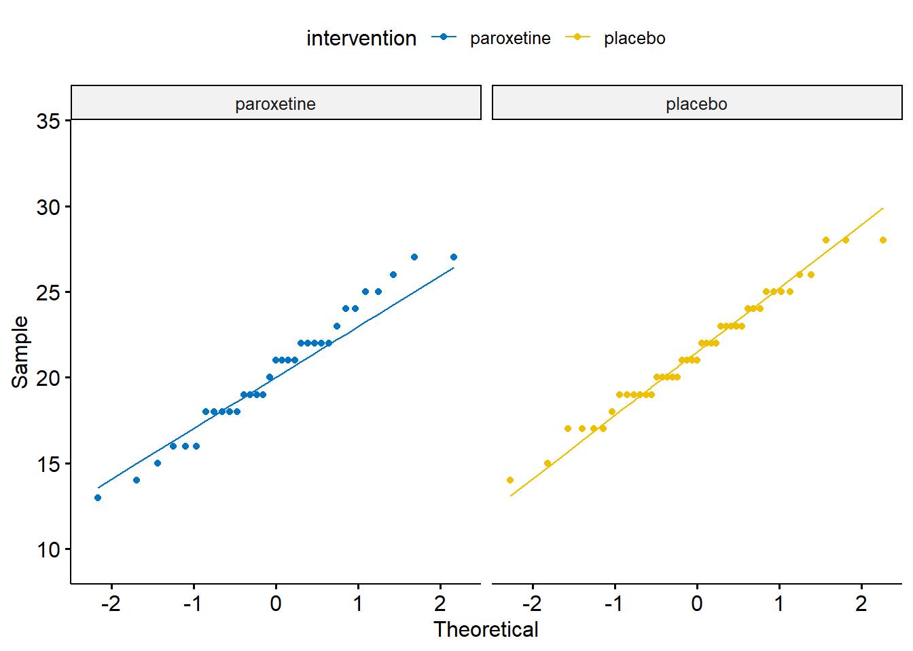

library(rstatix)
library(PupillometryR)
library(gtsummary)
library(ggpubr)
library(ggsci)
library(here)
library(tidyverse)5 Two-sample t-test (Student’s t-test)
Two sample t-test (Student’s t-test) can be used if we have two independent (unrelated) groups (e.g., males-females, treatment-non treatment) and one quantitative variable of interest.
When we have finished this Chapter, we should be able to:
5.1 Research question and Hypothesis Testing
We consider the data in depression dataset. In an experiment designed to test the effectiveness of paroxetine for treating bipolar depression, the participants were randomly assigned into two groups (paroxetine Vs placebo). The researchers used the Hamilton Depression Rating Scale (HDRS) to measure the depression state of the participants and wanted to find out if the HDRS score is different in paroxetine group as compared to placebo group at the end of the experiment. The significance level \(\alpha\) was set to 0.05.
Note: A score of 0–7 in HDRS is generally accepted to be within the normal range, while a score of 20 or higher indicates at least moderate severity.
5.2 Packages we need
We need to load the following packages:
5.3 Preraring the data
We import the data depression in R:
library(readxl)
depression <- read_excel(here("data", "depression.xlsx"))We inspect the data and the type of variables:
glimpse(depression)Rows: 76
Columns: 2
$ intervention <chr> "placebo", "placebo", "placebo", "placebo", "placebo", "p…
$ HDRS <dbl> 19, 21, 28, 22, 22, 28, 23, 17, 19, 20, 26, 23, 23, 22, 1…The data set depression has 76 patients (rows) and includes two variables (columns). The numeric (<dbl>) HDRS variable and the character (<chr>) intervention variable which should be converted to a factor (<fct>) variable using the factor() function as follows:
depression <- depression %>%
mutate(intervention = factor(intervention))
glimpse(depression)Rows: 76
Columns: 2
$ intervention <fct> placebo, placebo, placebo, placebo, placebo, placebo, pla…
$ HDRS <dbl> 19, 21, 28, 22, 22, 28, 23, 17, 19, 20, 26, 23, 23, 22, 1…5.4 Assumptions
A. Explore the characteristics of distribution for each group and check for normality
The distributions can be explored visually with appropriate plots. Additionally, summary statistics and significance tests to check for normality (e.g., Shapiro-Wilk test) can be used.
Graphs
We can visualize the distribution of HDRS for the two groups:
set.seed(123)
ggplot(depression, aes(x=intervention, y=HDRS)) +
geom_flat_violin(aes(fill = intervention), scale = "count") +
geom_boxplot(width = 0.14, outlier.shape = NA, alpha = 0.5) +
geom_point(position = position_jitter(width = 0.05),
size = 1.2, alpha = 0.6) +
scale_fill_jco() +
theme_classic(base_size = 14) +
labs(title = "Grouped Raincloud Plot: HDRS by intervention") +
theme(legend.position="none")
The above figure shows that the data are close to symmetry and the assumption of a normal distribution is reasonable.
depression %>%
ggqqplot("HDRS", color = "intervention", conf.int = F) +
scale_color_jco() +
facet_wrap(~ intervention) +
theme(legend.position = "none")
Summary statistics
The HDRS summary statistics for each group are:
Summary statistics by group
HDRS_summary <- depression %>%
group_by(intervention) %>%
dplyr::summarise(
n = n(),
na = sum(is.na(HDRS)),
min = min(HDRS, na.rm = TRUE),
q1 = quantile(HDRS, 0.25, na.rm = TRUE),
median = quantile(HDRS, 0.5, na.rm = TRUE),
q3 = quantile(HDRS, 0.75, na.rm = TRUE),
max = max(HDRS, na.rm = TRUE),
mean = mean(HDRS, na.rm = TRUE),
sd = sd(HDRS, na.rm = TRUE),
skewness = EnvStats::skewness(HDRS, na.rm = TRUE),
kurtosis= EnvStats::kurtosis(HDRS, na.rm = TRUE)
) %>%
ungroup()
HDRS_summary# A tibble: 2 × 12
inter…¹ n na min q1 median q3 max mean sd skewn…² kurto…³
<fct> <int> <int> <dbl> <dbl> <dbl> <dbl> <dbl> <dbl> <dbl> <dbl> <dbl>
1 paroxe… 33 0 13 18 21 22 27 20.3 3.65 0.00167 -0.574
2 placebo 43 0 14 19 21 24 28 21.5 3.41 0.0276 -0.403
# … with abbreviated variable names ¹intervention, ²skewness, ³kurtosisdepression %>%
group_by(intervention) %>%
dlookr::describe(HDRS) %>%
select(described_variables, intervention, n, na, mean, sd, p25, p50, p75, skewness, kurtosis) %>%
ungroup()# A tibble: 2 × 11
described_…¹ inter…² n na mean sd p25 p50 p75 skewn…³ kurto…⁴
<chr> <fct> <int> <int> <dbl> <dbl> <dbl> <dbl> <dbl> <dbl> <dbl>
1 HDRS paroxe… 33 0 20.3 3.65 18 21 22 0.00167 -0.574
2 HDRS placebo 43 0 21.5 3.41 19 21 24 0.0276 -0.403
# … with abbreviated variable names ¹described_variables, ²intervention,
# ³skewness, ⁴kurtosisThe means are close to medians (20.3 vs 21 and 21.5 vs 21). The skewness is approximately zero (symmetric distribution) and the (excess) kurtosis falls into the acceptable range of [-1, 1] indicating approximately normal distributions for both groups.
Normality test
Hypothesis testing for Shapiro-Wilk test for normality
\(H_{0}\): the data came from a normally distributed population.
\(H_{1}\): the data tested are not normally distributed.
- If p − value < 0.05, reject the null hypothesis, \(H_{0}\).
- If p − value ≥ 0.05, do not reject the null hypothesis, \(H_{0}\).
The Shapiro-Wilk test for normality for each group is:
depression %>%
group_by(intervention) %>%
shapiro_test(HDRS) %>%
ungroup()# A tibble: 2 × 4
intervention variable statistic p
<fct> <chr> <dbl> <dbl>
1 paroxetine HDRS 0.976 0.670
2 placebo HDRS 0.979 0.614The tests of normality suggest that the data for the HDRS in both groups are normally distributed (p=0.67 >0.05 and p=0.61 >0.05, respectively).
Important
Normality tests often are not helpful guides
For small sample sizes, the Shapiro-Wilk test (and other normality tests) has little power to reject the null hypothesis (under-powered test).
If the sample size is large normality tests may detect even trivial deviations from the normal distribution (over-powered test).
Tip
The decision about normality of data should be based on a careful consideration of all available information such as graphs (histograms, Q-Q plots), summary and shape measures and statistical tests.
B. Levene’s test for equality of variances
Hypothesis testing for Levene’s test for equality of variances
\(H_{0}\): the variances of data in two groups are equal
\(H_{1}\): the variances of data in two groups are not equal
- If p − value < 0.05, reject the null hypothesis, \(H_{0}\)
- If p − value ≥ 0.05, do not reject the null hypothesis, \(H_{0}\)
The Levene’s test for equality of variances is:
depression %>%
levene_test(HDRS ~ intervention)# A tibble: 1 × 4
df1 df2 statistic p
<int> <int> <dbl> <dbl>
1 1 74 0.176 0.676Since the p-value = 0.676 >0.05, the null hypothesis that the variances of HDRs in two groups are equal is not rejected.
5.5 Run the t-test
We will perform a pooled variance t-test (Student’s t-test) to test the null hypothesis that the mean HDRS score is the same for both groups (paroxetine and placebo).
The formula of the test is given by the t-statistic as follows:
\[t = \frac{\bar{x}_{1} - \bar{x}_{2}}{s_{p} \cdot \sqrt{\frac{1}{n_{1}} + \frac{1}{n_{2}}}}\]
where \(s_{p}\) is an estimate of the pooled standard deviation of the two groups which is calculated by the following equation:
\[s_{p} = \sqrt{\frac{(n_{1}-1)s_{1}^2 + (n_{2}-1)s_{2}^2}{n_{1}+ n_{2}-2}}\]
Student’s t-test
t.test(HDRS ~ intervention, var.equal = T, data=depression)- 1
-
If we reject the null hypothesis of Levene’s test, we have to type
var.equal = F(or type nothing as this is the default), so the Welch’s t-test is applied.
Two Sample t-test
data: HDRS by intervention
t = -1.4185, df = 74, p-value = 0.1602
alternative hypothesis: true difference in means between group paroxetine and group placebo is not equal to 0
95 percent confidence interval:
-2.777498 0.467420
sample estimates:
mean in group paroxetine mean in group placebo
20.33333 21.48837 depression %>%
t_test(HDRS ~ intervention, var.equal = T, detailed = T) # A tibble: 1 × 15
estimate estimate1 estim…¹ .y. group1 group2 n1 n2 stati…² p df
* <dbl> <dbl> <dbl> <chr> <chr> <chr> <int> <int> <dbl> <dbl> <dbl>
1 -1.16 20.3 21.5 HDRS parox… place… 33 43 -1.42 0.16 74
# … with 4 more variables: conf.low <dbl>, conf.high <dbl>, method <chr>,
# alternative <chr>, and abbreviated variable names ¹estimate2, ²statisticThe p-value = 0.16 is greater than 0.05. There is no evidence of a significant difference in mean HDRS between the two groups (failed to reject \(H_0\)). The difference between means (20.33 - 21.49) equals to -1.16 units of the HDRS and note that the 95% confidence interval of the difference in means (-2.78 to 0.47) includes the hypothesized null value of 0. Based on these results, there is not evidence that paroxetine is effective as a treatment for bipolar depression.
Note that the paroxetine group (\(n_1=33\)) has df (degrees of freedom) = 33-1 = 32 and the placebo sample (\(n_2= 43\)) has df = 43-1 = 42 , so we have df = 32 + 42 = 74 in total. Another way of thinking of this is that the complete sample size is 76, and we have estimated two parameters from the data (the two means), so we have df = 76-2 = 74 .
NOTE: The Student t-test does not have any restrictions on \(n_1\) and \(n_2\) —they can be equal or unequal. However, equal samples are preferred because this maximizes the power to detect a specified difference.
Present the results in a summary table
Show the code
depression %>%
tbl_summary(
by = intervention,
statistic = HDRS ~ "{mean} ({sd})",
digits = list(everything() ~ 1),
label = list(HDRS ~ "HDRS score"),
missing = c("no")) %>%
add_difference(test.args = all_tests("t.test") ~ list(var.equal = TRUE),
estimate_fun = HDRS ~ function(x) style_sigfig(x, digits = 2),
pvalue_fun = function(x) style_pvalue(x, digits = 2)) %>%
add_n()| Characteristic | N | paroxetine, N = 331 | placebo, N = 431 | Difference2 | 95% CI2,3 | p-value2 |
|---|---|---|---|---|---|---|
| HDRS score | 76 | 20.3 (3.7) | 21.5 (3.4) | -1.2 | -2.8, 0.47 | 0.16 |
| 1 Mean (SD) | ||||||
| 2 Two Sample t-test | ||||||
| 3 CI = Confidence Interval | ||||||
Hence, there is not evidence that HDRS score is significantly different in paroxetine group, mean = 20.3 (sd = 3.7), as compared to placebo group, 21.5 (3.4), (mean difference= -1.2 units, 95% CI = -2.8 to 0.47, p = 0.16 >0.05).